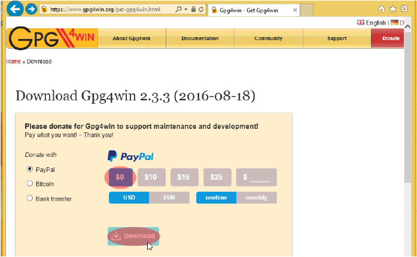
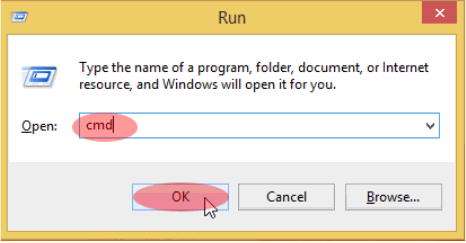
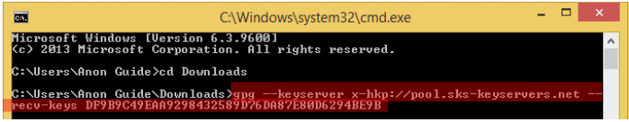

دانلود دستی و آماده کردن دبیان بر روی ویندوز
۱. مرورگر خود را باز کرده به آدرس زیر بروید:
https://www.gpg4win.org/get-gpg4win.html
۲. زمانی که صفحه سایت باز شد گزینه 0$ رادربخش کمک مالی انتخاب کرده و بر روی Download کلید کنید
نکته:ورژن GPG4Win در لینک دانلود شما ممکن است بالاتر از چیزی که در این تصویر میبینید باشد که مهم نیست.

۳. زمانی که پیام دانلود روی مرورگر شما ظاهر شد بر روی Save کلیک کنید (در اینجا مرورگر IE نشان داده شده است)

نکته مهم: توجه داشته باشید که در ایران معمولن از Download Manager استفاده می شود و دانلود توسط مرورگر انجام نمی شود اما ما در اینجا برای آسودگی همه کاربران با مرورگر پیشفرض ویندوز یعنی اینترنت اکسپلورر کار می کنیم و دانلود ها را هم بر مبنای نبود دانلود منیجر انجام می دهیم.
۴. زمانی که دانلود تمام شد بر روی Run کلیک کنید
۵. اگر پیام زیر ظاهر شد بر روی Yes کلیک کنید.
۶. زبان انگلیسی پیشفرض را به همان صورت رها کرده و بر روی OK کلیک کنید
۷. بر روی Next کلیک کنید.
۸.بر روی Next کلیک کنید
۹. بر روی Next کلید کنید.
۱۰. باز بر روی Next کلید کنید.
۱۱ بر روی Install کلیک کنید.
۱۲. زمانی که نوار پیشرفت کامل شد بر روی Next کلیک کنید
۱۳. تیک گزینه Show the README file را بردارید و بر روی Finish کلیک کنید.
۱۴. در صورتی که CPU شما ۳۲ بیت است با مرورگر خود وارد آدرس زیر شود:
https://cdimage.debian.org/mirror/cdimage/archive/7.11.0/i386/iso-cd/
در صورتی که CPU شما ۶۴ بیتی است وارد آدرس زیر شوید:
https://cdimage.debian.org/mirror/cdimage/archive/7.11.0/amd64/iso-cd/
۱۵. در ادامه در صورت داشتن CPU ۳۲ بیت بر روی گزینه هایلایت شده راست کلیک کنید و Save target as را انتخاب کنید در پنجره باز شده از نوار سمت چپ Downloads را انتخاب کنید و بر روی Save کلیک کنید. (توجه داشته باشید که د راینجا فرض بر استفاده از مرورگر IE است.) هر چند که در ایران بعلت استفاده از Internet download manager معمولاً با کلیک بر روی این گزینه دانلود منیجر به صورت اتوماتیک بالا آماده و فایل آماده دانلود می شود.
در صورت استفاده از CPU ۶۴ بیت باید گزینه زیر را انتخاب و دانلود کنید.
۱۶. حالا فایل Hash checksum که نشان دهنده سالم بودن فایل ISO دبیان دانلود شده میباشد را دانلود کنید بر روی فایلی با نام SHA256SUMS راست کلیک (یا در صورت داشتم دانلود منیجر کلیک) کنید و با انتخاب گزینه Save target as شروع به دانلود کنید.
۱۷. در ادامه فایل GPG که تأیید کننده اعتبار فایل SHA256SUM است را دانلود کنید. بر روی فایلی با نام SHA256SUMS.sign راست کلیک کرده و گزینه Save target as را انتخاب کرده و شروع به دانلود کنید.
۱۸. اگر از ویندوز ۸ به بالا استفاده میکنید بر روی کلید Start در گوشه چپ و پایین Desktop کلیک کنید تایپ کنید cmd و بر روی Command Prompt کلیک کنید.
اگر از ویندوزی پایینتر از ۸ استفاده میکنید کلید ویندوز بر روی کیبورد را بفشارید ( همان کلید که لوگوی ویندوز دارد) + R تا پنجره Run ظاهر شود سپس در نوار Open تابیپ کنید cmd سپس بر روی OK کلیک کنید.

۱۹. مسیر را به پوشه Downloads تغییر دهید پس تایپ کنید cd Download و بر روی Enter کلیک کنید.
۲۰. حالا نیاز دارید که کلید عمومی GPG را وارد کنید تا در هنگام صدور تاییدیه مورد استفاده قرار گیرد. پس تایپ کنید:
gpg --keyserver x-hkp://pool.sks-keyservers.net --recv-keys DF9B9C49EAA9298432589D76DA87E80D6294BE9B

در صورتی که با موفقیت کلید GPG دبیان را وارد کردید آنچه بر صفحه نمایش میبینید باید چیزی شبیه به تصویر زیر باشد. اگر به خطا بر خوردید بررسی کنید که کارکتر های طولانی بعد از:
recv-keys--
را به درستی وارد کردهاید و بعد دوباره دستور را تکرار کنید.
۲۱. در ادامه اثر انگشت کلید امضای سی دی دبیان را تأیید کنید پس تایپ کنید:
gpg --fingerprint DF9B9C49EAA9298432589D76DA87E80D6294BE9B
در صورتی که کلید GPG درست را وارد کرده باشید صفحه نمایش شما باید شبیه به تصویر زیر باشد.
۲۲. حالا نوبت تأیید فایل checksum که قبلن دانلود کردید میباشد پس تایپ کنید:
gpg -v SHA256SUMS.sign
و Enter کنید
خروجی باید به شما بگوید فایل مورد تأیید است با امضا درست از: Debian CD signing ket debian-cd@lists.debian.org
هر چند اگر پیام امضا بد را داد یکی از فایلها ممکن است دستکاری یا خراب شده باشد.اگر چنین چیزی دیدید دو فایل SHA256SUMS و SHA256SUMS.sign از debian.org دانلود کنیدو مراحل ۲۰ تا ۲۲ را از ابتدا شروع کنید.
نکته: توجه داشته باشید که شما میتوانید هشدار: key is not certified with a trusted signatureنادیده بگیرید چون این مورد مربوط به این فرایند نمی شود.
۲۳. حالا تایپ کنید :
type SHA256SUMS |findstr netinst > sha256.sum
و Enter را فشار دهید.
نکته:توجه کنید علامت قبل findstr که یک خط عمودیست pipe نامیده میشود که در cmd به صورت دو خط عمود زیر هم نشان داده میشود برای زدن خط عموی معمولاً از دو کلید \ + Shift استفاده می شود.
۲۴. حالا نوبت تأیید کردن ISO دبیان رسیده. پس دستور زیر را تایپ کنید و Enter بزنید
C:\Program Files\GNU\GnuPG\sha256sum.exe” -c sha256.sum”
نکته: توجه کنید که اینجا حتمن باید ” را بزنید
نکته:در این آموزش از ویندوز ۸.۱ استفاده شده است اگر شما از نسخه های قدیمی تر استفاده میکنید و آموزش بالا برای شما کار نمیکند پس باید از دستور زیر استفاده کنید و Enter کنید.
”C:\Program Files (x86)\GNU\GnuPG\sha256sum.exe” -c sha256.sum
شما باید پیامی مبنی بر OK بودن ISO دبیان دریافت کنید.
اگر پیام FAILED را دریافت کردید در این صورت ISO دبیان شما دستکاری شده یا فایل خراب می باشد. دوباره ISO دبیان را دانلود کنید و و چنان که در مرحله ۱۴ توضیح داده شده تا این مرحله بیاید.
نکته:اگر میخواهید از CD/DVD برای دیسک نصب استفاده کنیدISO دبیان را بر روی دیسک رایت کنید و به بخش – د بروید.
۲۵. دوباره مرورگر خودرا باز کرده وارد آدرس زیر شوید:
https://sourceforge.net/projects/win32diskimager/files/latest/download
این لینک نرمافزار Win32 Disk Imager را دانلود میکند برنامهای که فایل ISO دبیان را درون فلش کپی میکند آن هم در حالتی که بتوان فلش را بوت کرد.
۲۶. به صفحهای که دانلود شما تا چند ثانیه بعد شروع میشود هدایت می شوید. زمانی که پنجره دانلود ظاهر شد بر روی Save کلیک کنید.
۲۷. زمانی که دانلود کامل شد بر روی RUN کلیک کنید تا Win 32 Disak Imager باز شود.
۲۸. زمانی که پنجره User Account Control باز شد بر روی Yes کلیک کنید.
۲۹. زمانی که پنجره Win32 Disk Imager به نمایش در آمد بر روی Next کلیک کنید.
۳۰.در صفحه جدید I accept the agreement را انتخاب کرده بر روی Next کلیک کنید.
۳۱. باز بر روی Next کلیک کنید.

۳۲. باز بر روی Next کلیک کنید.

۳۳. تیک Create a desktop icon را بزنید و برروی Next کلیک کنید.
۳۴. حال بر روی Install کلیک کنید

۳۵. حال تیک دو گزینه View README.txt و Launch Win32DiskImager. را برداشته و بر روی Finish کلیک کنید.
۳۶. حال فلشی که میخواهید بر روی آن فایل نصب دبیان را بریزید وصل کنید و بر روی Win32DiskImager دو بار کلیک کنید.
۳۷.اگر با پنجره User Account Control روبرو شدید بر روی Yes کلیک کنید.
۳۸. بعد از باز شدن برنامه بر روی آیکون پوشه کلیک کنید.

۳۹. بعید از باز شدن پنجره Select a disk image بر روی جایی که نوشته شده (Disk Images (.img .IMG کلیک کرده و گزینه *.* را انتخاب کنید.
۴۰. پوشه Downloads را انتخاب کنید و فایل ISO دبیان را انتخاب کرده بر روی Open کلیک کنید.
۴۱. بررسی کنید در بخش Devices فلش مورد نظر انتخاب شده باشد و بر روی Write کلیک کنید.
توجه: هرگونه اطلاعاتی بر روی فلش شما پاک خواهد شد پس اگر اطلاعاتی بر روی فلش دارید از آنها بک آپ بگیرید.
۴۲.زمانی که پنجره Confirm overwrite به نمایش در آمد بر روی Yes کلیک کنید تا نصاب دبیان بر روی USB ریخته شود.
۴۳. زمانی که کار به اتمام رسید پیام Write Successful نمایش داده میشود بر روی OK کلیک کنید و کامپیوتر خود را ری استارت کرده و به بخش-د بروید.